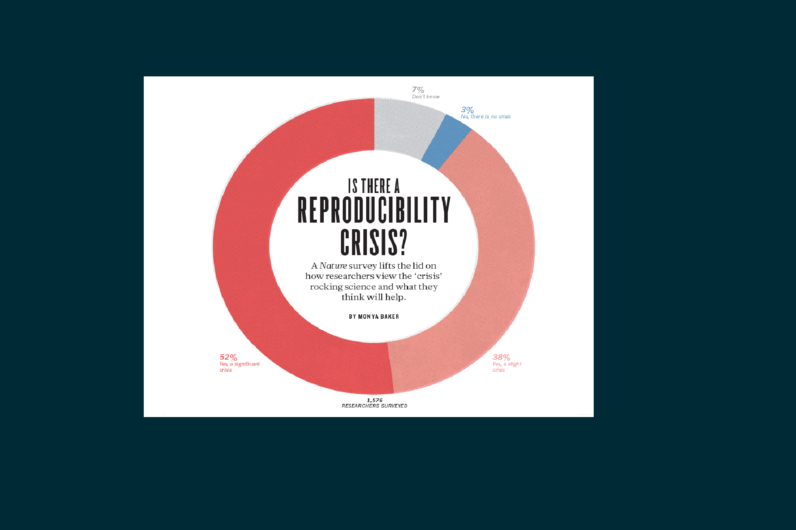

Reproducibility, Replicability, Repeatability
Bu iki terim arasındaki çizgiyi belirlemek adına reproducibility -> computational reproducibility

Ortanca örneklem büyüklüğü 380-460
Ortanca faktör başına madde sayısı 7
Ortanca madde başına örneklem 15
Peki ne olmalı? Wolf, Harrington, Clark, & Miller, 2013
RMSEA <0.06, SRMR <0.08, CFI, TLI(NNFI), NFI, GFI, AGFI için>0.95 kesme değerleri iyi uyumu işaret ediyorsa, incelenen çalışmaların yaklaşık yarısının bu kriterleri sağlamakta zorlandığı görülmüştür.
Veri-model uyumu neden önemli?
İncelenen çalışmalarda raporlanan sonuçları tekrar edilebilmenin büyük oranda mümkün olmayacağı değerlendirilmiştir.
Peki neden?